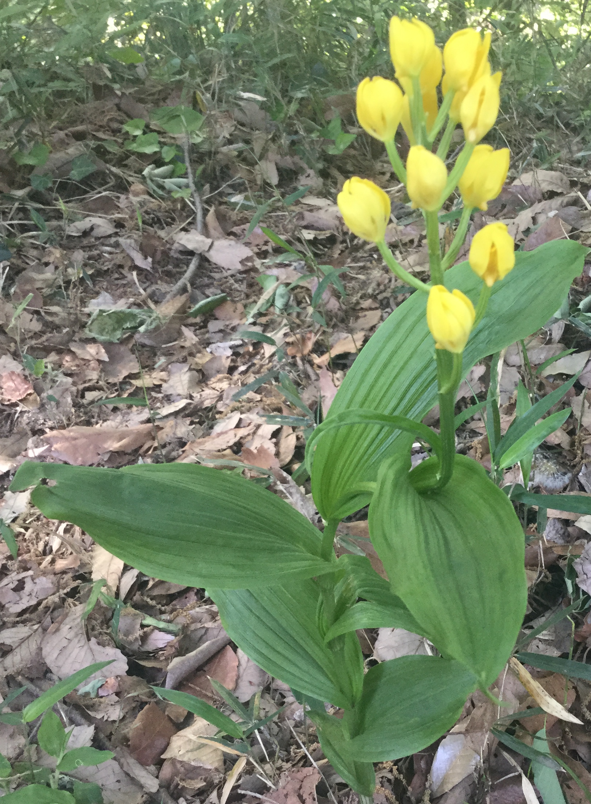

キンラン
自宅から数分も歩くと横浜市の「 市民の森 」(注1)に入れます。 一歩踏み込むと宅地化された周辺とは別世界の深い森が広がります。
先日お天気に誘われて森の遊歩道を歩いていると、 道端に10m毎に数株、枯れ葉の中から図1のような花が 周囲から浮き出た感じで風にそよいでいました。
みなさん、この花をごぞんじでしょうか？

図1: かわいい黄色いツボミ。名前が分からず苦労しました。
花の名前にくわしい妻がそっと手を伸ばして「あらこれ何？かわいい」 と言うものですから、 帰宅後にGoogleで画像検索しようと、大急ぎでひざまずいて写真を撮ってきました。 そのためツボミからピントを外しました。スミマセン :sweatsmile:
Googleの画像検索も時々ヒットしないことがあります。 今回もそのケース。 けっこう時間をかけて 図1の画像で画像検索しましたが見つかりません。
そもそもネット上の花の画像はほとんどが 満開 の画像です。 この写真のようにツボミの画像は少数派です。
ネットで「黄色いすずらん」とか「エビネかも」などいろいろ試行錯誤し、あと少しのところまできてもこれっという花がヒットしません。 最終的には画像検索ではなくて普通のGoogle検索で「ラン 黄色い花」などで検索してようやくこれっというのが見つかりました。
和名：きんらん（ラン科 キンラン属）
英名：Golden orchid
学名：Cephalanthera
「キンラン」で間違いないと確信したあとで、 改めてネットで見るとたしかにツボミの写真は少数です。 その意味では希少で貴重な画像ですが、何しろピンぼけｗ
1 キンランについて
2 Acknowledgement:
- 植物図鑑・Q＆A EVERGREEN - キンラン
- みんなの花図鑑 - キンラン
- 菌従属栄養植物 (「明間民央のページ」）